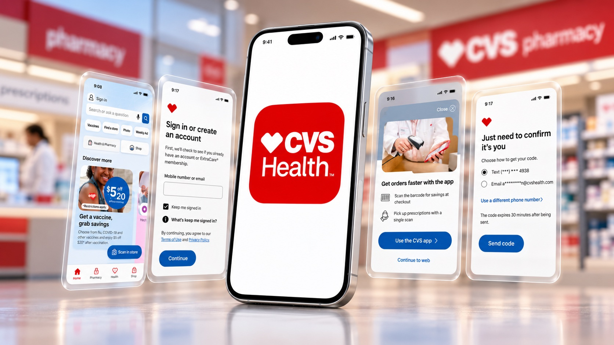
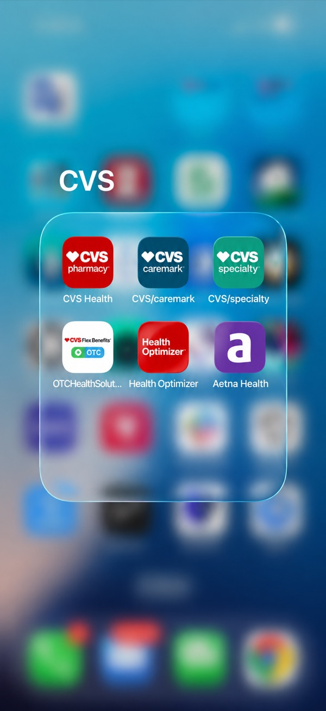
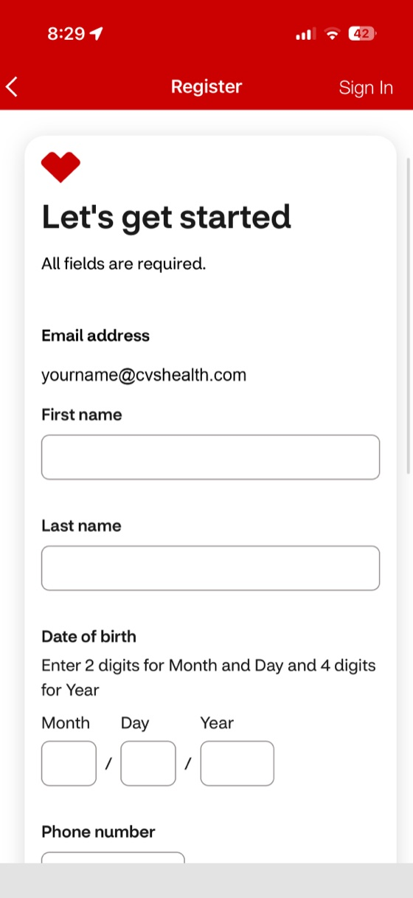
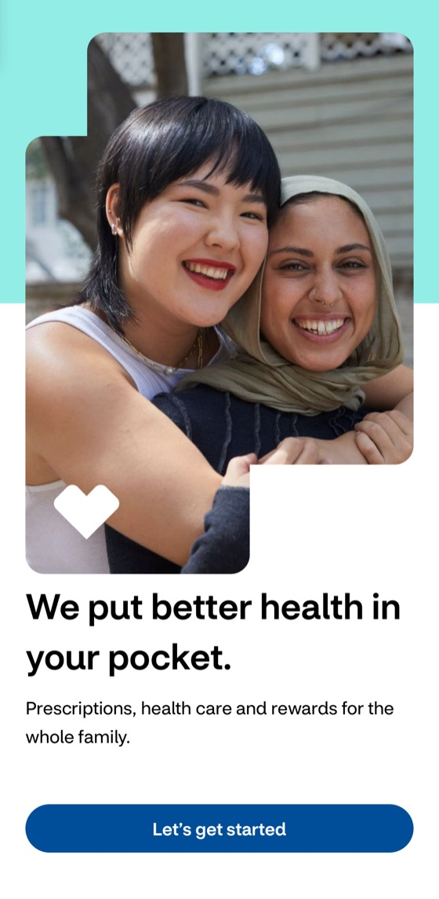
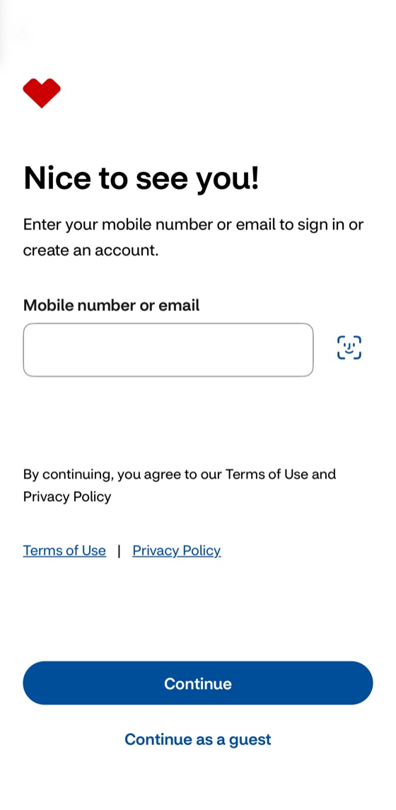
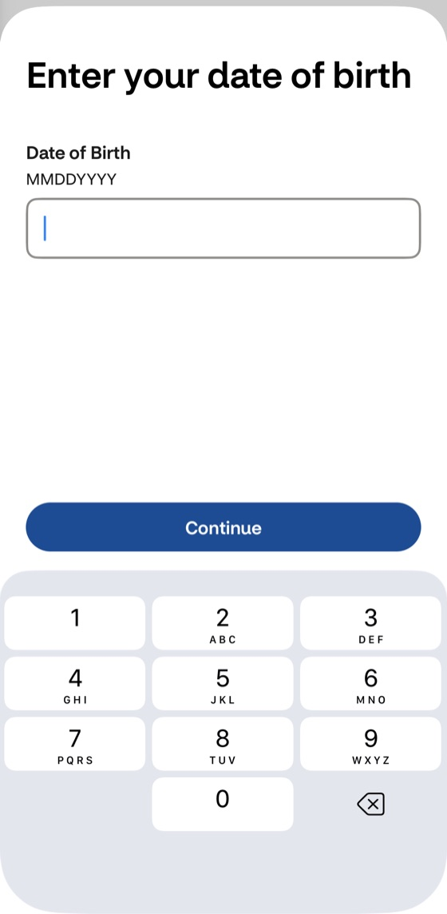
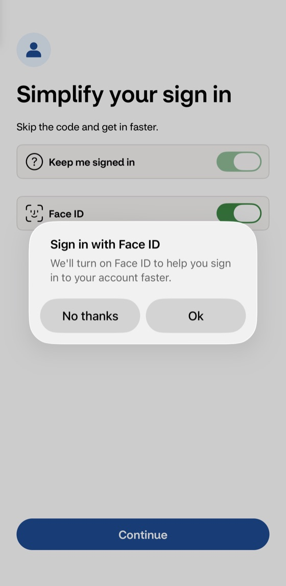
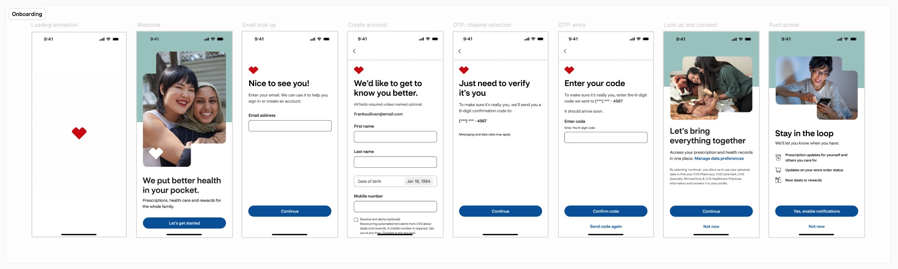
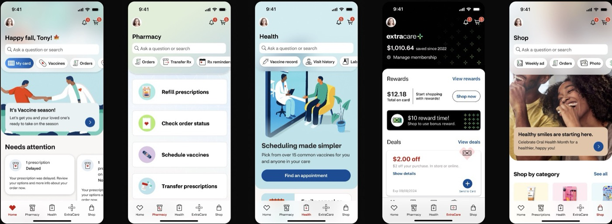
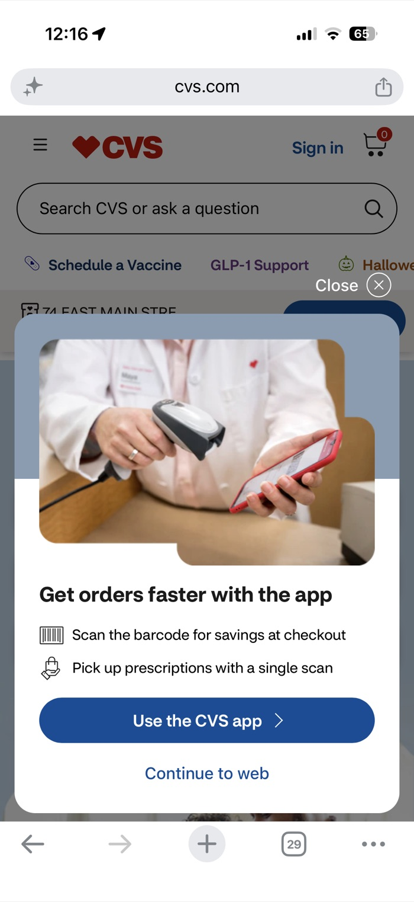

CVS Health's pharmacy, clinics, retail, and insurance each had their own front door. I designed the onboarding, search, and navigation that connect them, so people can move from a prescription to a clinic visit to a health article without starting over.

Pharmacy, Caremark, Specialty, and MinuteClinic each lived in their own app, with their own look, navigation, and search. Content was split the same way: separate channels for Shop, MinuteClinic, and Pharmacy, plus designated channels within Aetna for health guides, Medicare, and Medicaid. Someone refilling a prescription and then looking up a health question had to leave one product and start over in another.
The goal: a single entry point for every existing and first-time customer across CVS Health — Pharmacy, Caremark, Specialty, MinuteClinic, Retail, and Aetna — with cross-links between content channels, offered when they fit the moment, so people can switch context without losing their place. The first objective was to drive downloads and get new and existing customers into the new app. The second was retention, so the company could gradually shift focus and resources away from the older brand apps.
That meant a first-run experience that welcomes everyone, a single search that works across every business, and a navigation system that links it all together, without losing what made each part useful.

Customers were arriving from every CVS line of business with different expectations, and the experience had to feel warm, welcoming, and trustworthy — while carrying over as much of their sign-in and personal information as possible, in the fewest steps. It also had to introduce the new value of the app: one unified interface, faster access to more products and services, and a single front door to every CVS business.
Each step does one job, in plain language — so a required legal moment reads as a clear choice, not a wall of fine print. Where the old register screen asked for everything at once on one long form, the new flow breaks it into short, guided steps. And because the journey starts before the app opens, the web-to-app tactics under Navigation below are the front door to this flow.





Legal, security, and HIPAA steps moved to the back end, so what’s left on screen is short and guided.

Pharmacy, MinuteClinic, drug information, and retail each had their own search. I led the design of a single enterprise search — a configurable results template, bucketed results by business unit, and new features like “Kickstarter” suggestions and “Discover” questions that help people get answers without calling the contact center.

Headers looked different from one part of the app to the next, with no sense of where you were. I designed a single header and tab bar pattern: a consistent parent header for each area, a child header for deeper screens, and room for each area to express itself.
Read the Global Navigation deep dive
On the web, I redesigned the mobile header navigation and designed the “web channel shift” tactics that move CVS.com visitors into the new app: a full-screen app modal, a persistent “Use CVS app” link in the header, and in-page banners. We tested the placements against each other, kept the strongest, and retired the weaker ones — all without getting in the way of what people came to do.
What the testing taught us: full-screen prompts work best at the top of the funnel, before someone has started a task. Prompts in the middle of a prescription task frustrated people and lowered task success — so placement mattered as much as the message. The earlier snackbar (0.36% click-through) and smart banner (0.68%) were retired in favor of the stronger options.

The Super App grew its audience and kept it. The numbers below come from CVS Health’s internal 2025 performance reviews: first the app as a whole (a team result), then the parts I designed.
Moving security, legal, and HIPAA requirements out of the front-end flow and into the back end meant the screens people see could stay short and human. Compliance didn’t have to feel like friction. [Ari: confirm / edit in your own words]
The same “get the app” prompt worked well before a task started and backfired in the middle of one. Testing each placement against task success, not just clicks, kept growth from costing the experience. [Ari: confirm / edit in your own words]
How four separate searches became one, and took the share of top call-center reasons that search can answer from 53% to 77%.
Read the case study →How one consistent header and tab bar pattern gave every part of the app the same clear hierarchy, while leaving room for each area to look like itself.
Read the case study →